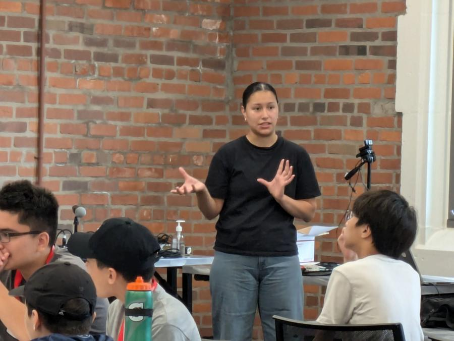

When Grandparents Day kicked off at The Ohio State University this month, graduate student Michelle Ramirez was at the forefront, guiding the connection between family and education.
Ramirez, a third-year Ph.D. student in Computer Science Engineering, has carved out a unique niche at the intersection of machine learning and ecology as a researcher with the Imageomics Institute, based at Ohio State.
The institute is pioneering a new scientific field where machine learning tools empower biologists to analyze image data, uncovering patterns and insights into traits and relationships at individual, population, and species levels—insights that are then integrated into the algorithms driving these tools.
Ramirez’s research leverages thousands of available images to classify butterfly species and is currently focused on studying how coyote migration patterns are impacted by climate change, using nationwide image and camera trap data.
In addition to leading an Imageomics computer vision workshop, Ramirez is also organizing the BeetlePalooza research event from Aug. 12-15. Her involvement extends to BioCLIP research, and she will serve as a student mentor for newly-announced “Experiential Introduction to AI and Ecology” course, which will include field research in Hawaii.
Ramirez began her academic journey at the University of Chicago and even ventured into the industry. However, her desire to make a meaningful impact in the world consistently drew her back to research.
“I was really fascinated by what Professor Tanya Berger-Wolf was doing at WildLabs, blending ecology and machine learning. So, I reached out to her about possibly joining her research team,” Ramirez said.
Joining Berger-Wolf’s team aligned perfectly with her goal of not only conducting research but also contributing to the greater good of humanity.